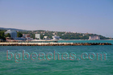
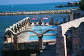
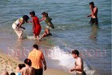
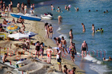
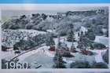
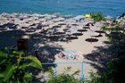
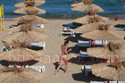
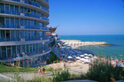
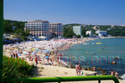

Св.св. Константин и Елена
Най-старият български черноморски курорт е намиращият се на около 10 километра североизточно от Варна комплекс "Св. св. Константин и Елена". Изграждането му започва през 1908г. в пределите на манастира "Св.Св.Константин и Елена" изграден в чест на император Константин и императрица Елена, която е негова майка. Повечето по-възрастни жители на Варна знаят, че старото име на курорта е Дружба. Множеството минерални извори с лечебни свойства, подходящите климатични условия и морето са предпоставка за изграждането на първия детски балнеосанаториум през 1909 г. На територията на курорта "Св. св. Константин и Елена" се отглеждат успешно сортове бяло грозде, които се използват в козметиката. Не е случаен факта, че курорта е гроздолечебен център. Гроздолечебната станция е открита през 1933 година и посещавана от богати западни дами, дошли да се насладят на тишината, спокойствието и красотата на местността, а също така и да разнообразят ежедневието си с по-млад любовник. В началото на Втората световна война е закрита. На юг от курорта се намира дворецът Евксиноград. В курорта "Св. св. Константин и Елена" се намира и Университетската ботаническа градина Варна създадена през 1977 г., където се провеждат летни учебни практики за студенти, а специалисти по ботаника изнасят научни лекции. Градината е разположена на площ от 360 декара. Отглеждат се над 400 вида дървета и храсти. Най-красивото място може би е Розариумът (Розовата градина), където можете да разгледате 32 вида рози. Да се надяваме, че Варна няма да пусне строители в Ботаническата градина.
Кеят на Св. св. Константин и Елена
Морски вълни
Хотелски комплекс- 
Бреговете на Св. св. Константин и Елена
Минерален басейн
Изоставен кей
Момичета в морето- 
Минерални басейни в Св.св. Константин и Елена
Заведения на плажа
Кораб-ресторант "Сириус"
Плаж до хотел "Сириус Бийч"- 
Къпане с дрехи - 
Плажната ивица на Св.Св.Константин и Елена
Поглед отгоре- 
През 1960г.
Крайбрежната ивица- 
На плаж - 
Красавица на плажа
Атракции на плажа- 
Хотел "Сириус Бийч" - 
Крайбрежие
Горещ извор
Хотели на плажа
Плажа на Св.Св.Константин и Елена
В края на плажа
Веселба в Св.Св.Константин и Елена
Хотели в гората
Лековитата вода